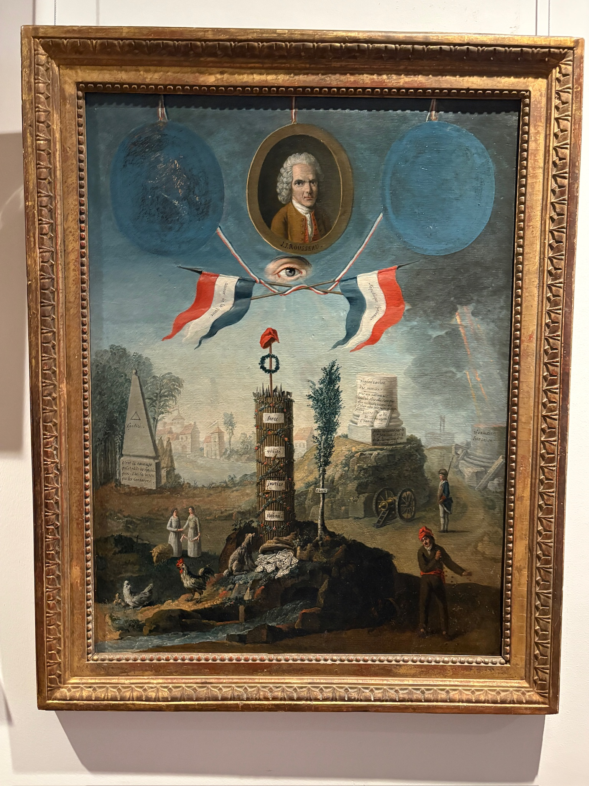
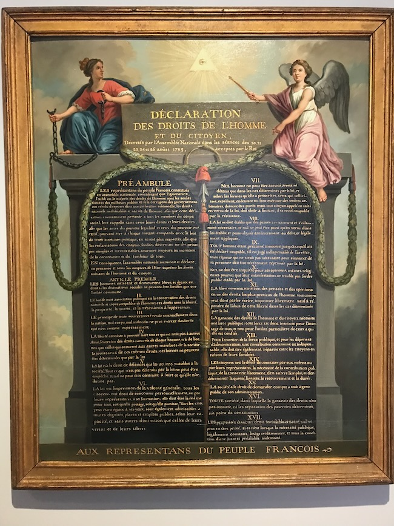
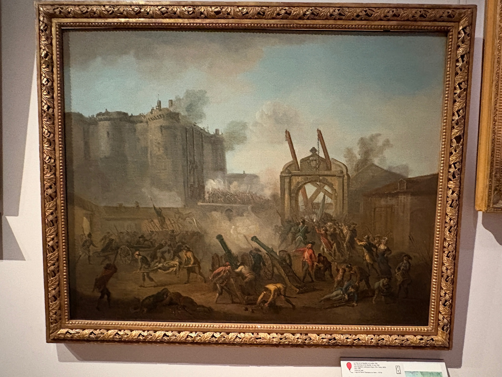
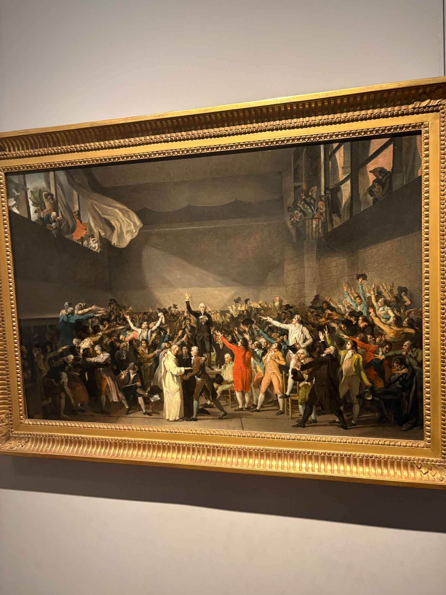
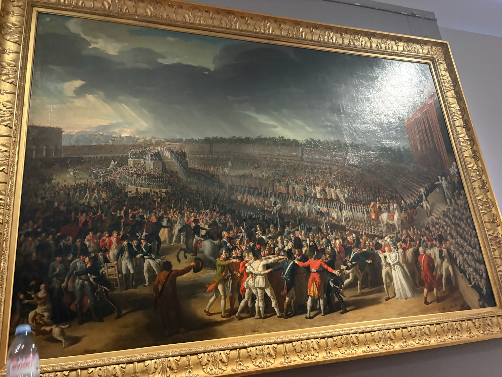
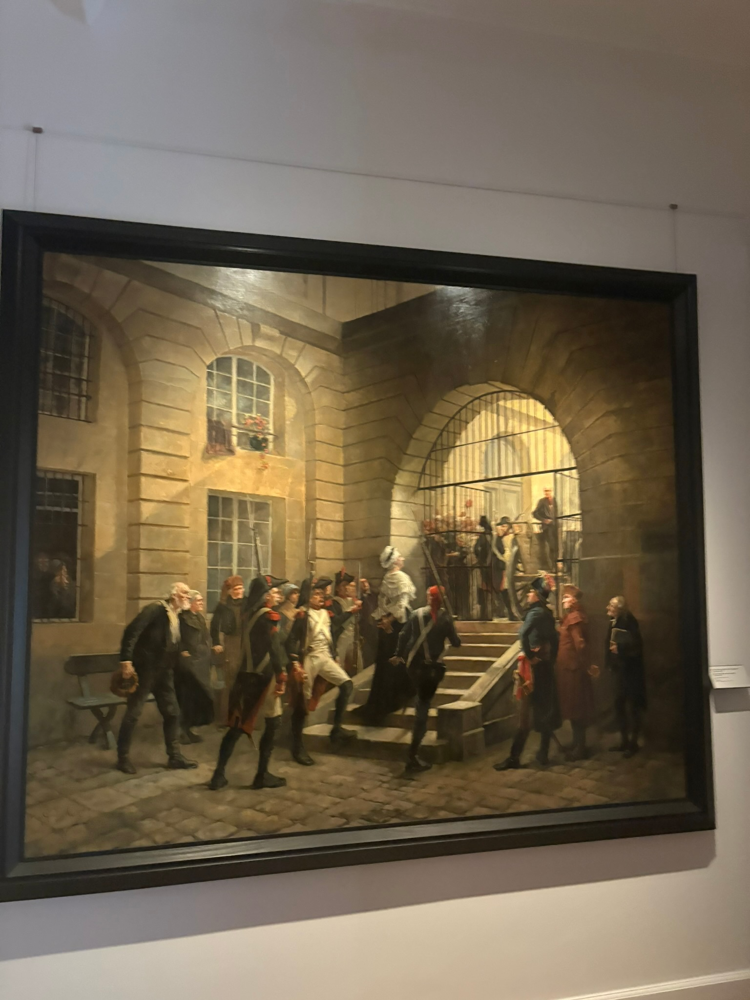

The following pieces can be found on the yellow section of the second floor of the map. The museum houses the world's largest collection of works of art and historical objects dating from the years 1789 to 1799. In this section, the exhibition presents, based on the collections, a visual and material chronicle of ten exceptional years for Paris and France. The rise of the French Revolution is displayed through a variety of works including paintings, drawings, sculptures, pieces of furniture, ceramics, medals, and accessories. Each piece contributes to the complexities of this time period and the way it shaped the French nation as we know it today. Below you will find six standout pieces from this exhibit that outline each of the major events and turning points within the French Revolution. Three of the pieces include audio recording which explain the context, key figures, and philosophical themes within the piece. Then, answer one of the three questions at the bottom of the page and write your answer in the google doc linked on the front page of the website.
Allegory of the Revolution by Nicolas Henri Jeaurat de Bertry, 1794
This painting, in honor of Jean-Jacques Rousseau, directly correlates to the philosophical and political situation of the French Revolution. As we discussed in class, Rousseau set out to present an enlightened take on political theory and the balance of government to the people. In the painting, Rousseau looms over the current state of France, where the lower class of peasants longs for a day of equal economic and political representation. He theorized that the expression of general will in the social contract outrules that of a king or government; this would further influence the third estate and revolutionary nobility to break from the authority of the king. He believes in liberty within a legitimate state, a state that the French people so longed for throughout their fighting. The eye in the middle symbolizes how Rousseau's theories of balance of power look over France, urging the development of a new civil state. Rousseau's theories became a backbone of the French Revolution, including motivation for the Storming of the Bastille and Versailles, along with the developments within the Reign of Terror.

The Declaration of the Rights of Man and Citizen, Jean-Jacques-François Le Barbier, 1789
After the National Assembly drafted and published the Declaration of the Rights of Man and Citizen, Jean-Jacques-François Le Barbier commissioned this painting in August of 1789. In the painting, France is depicted breaking the chains of tyranny by the figure on the left and the Spirit of the Nation on the right, upholding the written-out sacred and inalienable rights listed below. The painting serves as a vital representation of the values that upheld the French Revolution, and the future of republics to come. It shaped the democratic ideals of France and, pursuant to the listed rights, freed the people from tyrannical rule. With the basis of the Declaration of Independence of the United States, the rights to liberty, security, and property are deemed sacred. As we discussed in class, the application of these rights must always come into question. The declaration does not remark the role of women or slave colonies in its text, contradicting its sacred principles of equality and liberty for all.

The Storming of the Bastille, Jean-Baptiste Lallemand, 1789
On July 14, 1789, craftsmen, soldiers, and tradesmen stormed the Bastille prison in search of weaponry and free prisoners. As the breakout moment of the French Revolution, the Storming of the Bastille is one of the most commemorated insurrections in French history, leading to its frequent depiction of art. This painting depicts the violent attacks on the prison that lies in the distance. Figures in the front of the painting fight French soldiers and collect ammunition to further their cause of total revolution. The recent rising prices on goods and taxes motivated the start of the revolution, and quickly turned violent in the form of mass insurrection as seen here, Viewed through the lens of revolutionary ideals. The Bastille was stormed before the release of the Declaration of the Rights of Man and the Citizen, marking it as a precursor to influence the philosophical backbone of rights to be published later by the National Assembly.

The Tennis Court Oath, Jacques-Louis David, 1794

The Feast of the Federation, Huburt Robert, 1790

Marie-Antoinette leaving the Conciergerie, George Cain, 1885

Philosophical Questions
- As seen above, Rousseau was a predominant thinker in Enlightenment law and politics, a key influence in the French Revolution. Based on Rousseau's principles of liberty within a legitimate state, would he agree with the Reign of Terror and post-Revolutionary violence? Are the principles of liberty he describes in alignment with the values of groups such as the Jacobins and radical revolutionaries?
- The Declaration of the Rights of Man and the Citizen describes the basis of the rights and liberty entitled to all. However, what room does this declaration leave for assumptions of the rights of women or members of colonised states? In what ways does the declaration include or not include the liberty of all people, not just the men who drafted it?
- When Marie Antoinette went to the guillotine, she was met with a crowd of protesters and revolutionaries. What assumptions can be made regarding her image as a woman subjected to her role within the crown? As the queen, does she deserve such hatred when she lacked any power to change the course of French governance in the first place?